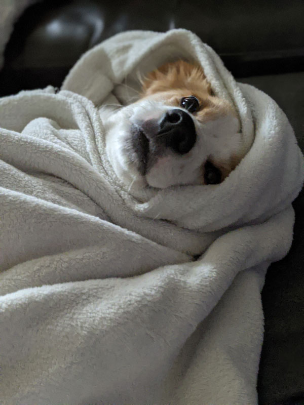
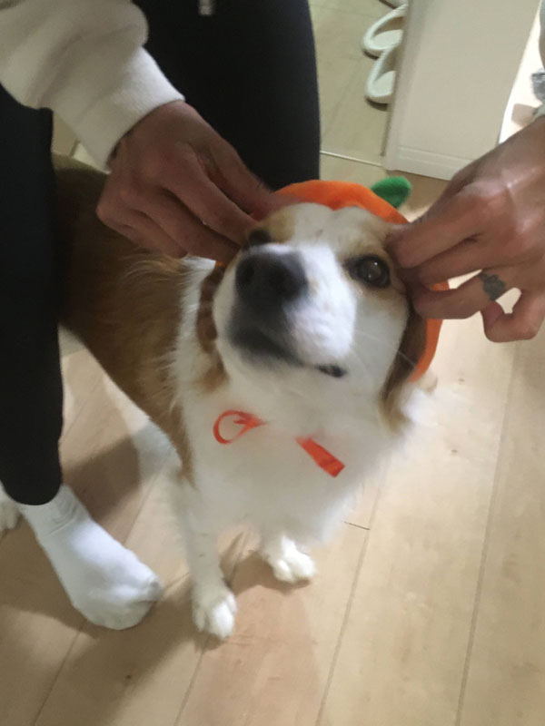

  This is Bishop, the three year old baby of the family :) My dad is in the Navy and when he was deployed in Crete, Greece, he came back with this little guy. He was one of many strays on the island. We call him a street rat because he still acts wild, chasing Chloe and stealing food, hiding treats all over the house. Like his big sister, Chloe, Bishop has many nicknames: Bishie, Bishie-bop, Bug-a-boo, etc. His personality is the opposite of hers: full of energy, eager to run and play. Whether its other dogs or people, he always wants to make new friends.
Bishie's favorite hobbies include:
*disclaimer: Bishop is of course a very good boy, these hobbies are all said in jest
His actual favorite hobby is to play with anything and everything he can find in the house.
| Bishie's Favorite Toys | ||||
|---|---|---|---|---|
| Rank | Toy | How Messy? | Noisiness | Durability |
| 1 | plastic water bottle | 3 | 10 | 3 |
| 2 | mini rubber pig | 0 | 5 | 10 |
| 3 | Chloe's face | 0 | 10 | 10 |
| 4 | stuffed squirrel plushie | 10 | 0 | 4 |
| 5 | braided rope | 7 | 0 | 8 |
*table's numerical scores are out of 10
There are at least three of the squeaking rubber pig toys floating around my house. Bishop loves them so much that he hides them everywhere and my family always end up buying him new ones because we think they are lost.